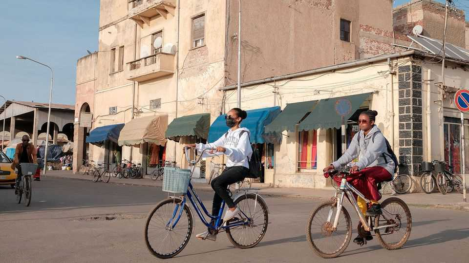

Could Eritrea come in from the cold?
Isaias Afwerki, its reclusive dictator, has spotted an opening to reconcile with America
June 11th 2026

When eritrea’s national football team returned home from South Africa in April, seven of its players did not. It was not the first time. Plenty of the 3.5m or so people living in the reclusive dictatorship on the Red Sea would like to escape the indefinite “national service” (essentially, forced labour for the state) and the absence of rights and freedoms enforced by the regime of Isaias Afwerki, the dictator since 1991. Mr Isaias has been shunned by the West for decades. In 2021 America imposed sanctions on Eritrea after its soldiers raped and pillaged their way across northern Ethiopia during the war in Tigray, a province on the border with Eritrea.
Could times be about to change for Mr Isaias? The signs are multiplying. Donald Trump’s top Africa adviser is reported to have met the dictator in late 2025. Marco Rubio, America’s secretary of state, has talked of a “new era of us–Eritrea relations”. Much chatter suggests America will soon lift the sanctions it imposed five years ago, perhaps opening the way for Mr Isaias’s wider rehabilitation.

Precisely what America seeks from Eritrea is unclear. Perhaps it wants to muscle in on its mining industry, which Chinese firms currently dominate. Perhaps it would like Mr Isaias’s help fighting the Houthis, the Iran-backed militia that rules much of Yemen, just across the Red Sea. It almost certainly wants to prevent a war between Eritrea and Ethiopia, its expansionist neighbour, which would rock the Red Sea just when passage is needed for ships that cannot use the Strait of Hormuz because of the war with Iran.
Mr Isaias’s motives are more straightforward. He worries about Abiy Ahmed, Ethiopia’s truculent prime minister. Ethiopia lost its coastline when Eritrea seceded in 1993; Mr Abiy has in effect threatened to invade to get part of it back. Many suspect his real goal in Eritrea is regime change, if not re-annexation. To deter Mr Abiy, Mr Isaias has made overtures not just to America but also to Saudi Arabia. He has also built a regional network of allies and proxies hostile to Ethiopia’s prime minister. These include Egypt (long enraged by Ethiopia’s mega-dam on the Nile) and the Tigray People’s Liberation Front (tplf), which rules Tigray and fought a war against Mr Abiy (then allied with Eritrea) between 2020 and 2022.
Besides threatening shipping in the Red Sea, a war between Eritrea and Ethiopia could also merge into the civil war next door in Sudan, where the two back opposing sides. To avert such a disaster, America appears to be using both carrots and sticks to convince the two countries to talk to each other.
On May 11th it lifted an arms embargo on Ethiopia. It then signed a deal on security co-operation. But America has also warned Ethiopia that it opposes any military action against Eritrea. Lifting sanctions on Eritrea could be a sweetener for Mr Isaias. “The Americans are working really hard to get Isaias to agree to some kind of rapprochement [with Abiy],” says a senior Ethiopian official. “If Isaias [has any sense,] then he will have to say yes.”
The strategy may be working. In October Mr Abiy said the Eritrean port of Assab “rightfully belongs” to Ethiopia and vowed to build a naval base there. More recently, his underlings have told Western diplomats that commercial access to the port might suffice. Mr Isaias is understood to have conveyed that he is open to talks, if Eritrea’s sovereignty is guaranteed. “Isaias is ruthless, but rational,” says a former Western diplomat. “He is beginning to act as the adult in the room.”
But few trust that Mr Abiy has given up on capturing Assab. And if Mr Isaias thinks that sooner or later Ethiopia will strike, he may try to topple his nemesis first. The tplf would also love to unseat Mr Abiy, as would the Fano, another Ethiopian rebel group sponsored by Mr Isaias. Sudan’s army would probably help. Egypt is doling out guns and egging everyone on.
Tigray is the flashpoint. Mr Abiy has starved it of cash, fuel and medicine. The tplf is threatening war. “We have access to Eritrea [and] to Sudan,” says a tplf insider. “Co-ordination is going to be automatic.” On June 5th Ethiopia bombed Tigrayan troops on the border with Eritrea. Hundreds of Tigrayan soldiers were reportedly killed or injured. Mr Isaias’s showdown with Mr Abiy may not have started. But if this is peace, who needs a war? ■
Sign up to the Analysing Africa, a weekly newsletter that keeps you in the loop about the world’s youngest—and least understood—continent.